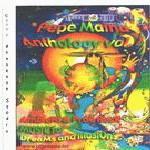

| Artist: | Pepe Maina |
| Title: | Anthology Vol.1 |
| Label: | Nonsense Studio no catnr |
| Length(s): | 70 minutes |
| Year(s) of release: | 2002 |
| Month of review: | [05/2002] |
| 1) | Clouds | 4.13 |
| 2) | Shoro-iiat | 6.44 |
| 3) | Leaves | 5.03 |
| 4) | Fading Out | 6.02 |
| 5) | Waves | 5.05 |
| 6) | Moondance | 6.40 |
| 7) | Autumn Dance | 5.35 |
| 8) | Wolves | 4.18 |
| 9) | Whale Song | 6.39 |
| 10) | Aegidius | 2.59 |
| 11) | The Wind's Game | 4.43 |
| 12) | Scerizza Part 3 | 7.16 |
| 13) | The Song Of The Harp And The Flute | 4.18 |